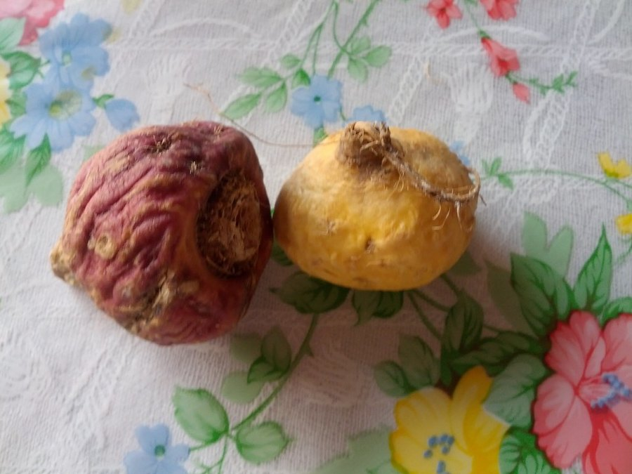

Vigor Boost Ingredients: All Nine, Traditional Use vs. Evidence
Two Brazilian barks, an Andean root, an Ayurvedic adaptogen and five more, all inside one 82 mg blend. Here's what each one is, what it's used for, and the most each gummy can hold.

Key takeaways
- Nine actives, one 82 mg blend. Muira puama, ashwagandha, maca, catuaba, green tea, caffeine, L-arginine, tribulus and horny goat weed, in that order on the label.
- Only caffeine has a printed dose. It's 10 mg, which lets you calculate a ceiling for every other ingredient.
- The math caps each herb low. Ashwagandha can't exceed about 21 mg and maca about 17 mg, against studied doses of 300 to 600 mg and 1,500 to 3,000 mg.
- "567 mg of dry powders" is a raw-herb conversion. It describes plant material before extraction, not what you swallow.
- Traditional use is long, clinical evidence is thin. Maca and ashwagandha have the best human data, and neither at gummy doses.
Vigor Boost ingredients are nine actives in one 82 mg proprietary blend: muira puama, ashwagandha, maca, catuaba, green tea extract, caffeine (10 mg), L-arginine, tribulus terrestris and horny goat weed. Only caffeine has its own amount. The rest have long traditional use, but their amounts aren't disclosed and the blend is far smaller than research doses.
This page takes the panel apart one line at a time. For each ingredient you'll see where it comes from, what it was traditionally used for, what modern studies actually tested and the most a single gummy could contain. If you want price, refund terms and our overall verdict, our full Vigor Boost review covers those.

Vigor Boost: check today's price
A once-daily men's vitality gummy with maca, muira puama, tribulus and horny goat weed. Sold only on the official site, with a 60-day money-back guarantee.
See the official price →What are the ingredients in Vigor Boost?
Here's the active list exactly as it appears on the label, in label order. That order matters, and the next section explains why.

| # | Ingredient | Origin | Traditional use | Most per gummy |
|---|---|---|---|---|
| 1 | Muira puama extract | Amazon tree bark and root | Tonic for vigor and nerves | About 32 mg |
| 2 | Ashwagandha | Indian root | Stress, sleep, strength | About 21 mg |
| 3 | Maca extract | Andean root vegetable | Energy, fertility, desire | About 17 mg |
| 4 | Catuaba extract | Brazilian tree bark | Tonic, fatigue | About 15 mg |
| 5 | Green tea extract | Camellia sinensis leaf | Alertness | About 14 mg |
| 6 | Caffeine | Pure compound | Stimulant | 10 mg (printed) |
| 7 | L-arginine | Amino acid | Blood flow | 10 mg or less |
| 8 | Tribulus terrestris | Mediterranean and Asian plant | Libido, vitality | 10 mg or less |
| 9 | Horny goat weed extract | Epimedium leaf, China | Libido, joint aches | 10 mg or less |
The inactive ingredients are corn syrup, cane sugar, water, apple pectin, sorbitol powder, natural flavors, citric acid and sodium citrate dihydrate. Together they make a standard pectin gummy with 10 calories and 2 g of added sugar.
Why is the Vigor Boost proprietary blend a problem?
A proprietary blend lets a company print one total instead of each ingredient's amount. It's legal, and companies say it protects their formula from copycats. For buyers, though, it removes the one number you need to compare a product with the research. Nobody outside the company can check whether there's enough maca or ashwagandha to matter.
There is one rule that helps. Under FDA labeling regulations, ingredients inside a proprietary blend must be listed in descending order by weight. Vigor Boost also prints caffeine at 10 mg, sixth in line. That single number turns the list into a set of limits.
- Ingredients 1 to 5 each weigh at least 10 mg, because they're listed above caffeine.
- Ingredients 7 to 9 each weigh 10 mg or less, because they're listed below it.
- All eight non-caffeine actives share the remaining 72 mg.
The ceilings in the table above come straight from that arithmetic. They're the most each ingredient could be if everything below it sat at its minimum. The real amounts are almost certainly lower for most of them. We're not guessing at the split. We're showing what the label makes impossible.
Here's a worked example. Suppose catuaba, green tea, L-arginine, tribulus and horny goat weed all sat at the bare minimum the rules allow. Muira puama and ashwagandha would still have to share what's left, and the second item can't outweigh the first. That's where the 21 mg ceiling for ashwagandha comes from. Any real-world split that gives the lower ingredients a meaningful amount pushes the top ones down further.
What does "equivalent to approximately 567 mg of dry powders" mean?
The label footnote says the 82 mg blend is equivalent to about 567 mg of dry powders. That's a raw-herb equivalence, and it's common on extract-based supplements.
Extracts are made by soaking dried plant material in a solvent and concentrating what dissolves. A 10:1 extract means 10 grams of dried herb produced 1 gram of extract. Some makers multiply each extract by its ratio and report the starting plant weight. Dividing 567 by 82 gives an average ratio of roughly 7 to 1 across the blend.
Three things to keep in mind. First, you still swallow 82 mg of actives. Second, caffeine and L-arginine are pure compounds, so they can't be multiplied this way; the conversion only covers the botanicals. Third, an extraction ratio tells you how much plant went in, not which compounds came out or how potent they are. And even taking 567 mg at face value, studies of maca used 1,500 to 3,000 mg of dried root a day for that one herb alone.
What are muira puama and catuaba?
Muira puama (Ptychopetalum olacoides)
Muira puama is a small Amazonian tree whose bark and root have been sold in Brazil for generations as a tonic, sometimes called "potency wood." It's the first ingredient on the Vigor Boost label, so it's the largest single component, at no more than about 32 mg.
Modern evidence is slim. Most of what's cited traces back to small open-label surveys in France decades ago, without placebo groups. Animal studies suggest some effects on memory and mood. There are no solid controlled trials showing what it does for men's vitality, and no established human dose.
Catuaba
Catuaba is a name applied to the bark of several Brazilian trees, which is itself a problem: the species in a given product isn't always clear. It's a traditional tonic for fatigue and low desire, often paired with muira puama. Human clinical research is essentially absent. It's in the formula because of tradition, not data.
Botanists link catuaba to several species, including Erythroxylum vacciniifolium and Trichilia catigua. The label doesn't say which one is used or what the extract is standardized to. Without that, even a perfectly designed study on one species wouldn't tell you much about this ingredient.
Is maca the best-studied Vigor Boost ingredient?
For desire specifically, yes. Maca is a radish-family root grown high in the Peruvian Andes and eaten as food. Small randomized trials gave men 1.5 to 3 g of maca a day for 8 to 12 weeks and found modest improvements in self-reported sexual desire compared with placebo. Testosterone and other hormones didn't change. A systematic review of these studies concluded the evidence was promising but limited by small sizes and short durations.
Maca is also a food. In Peru it's boiled, baked or ground into flour, and people eat it by the spoonful. That's useful context for dose: a teaspoon of maca powder weighs around 3 grams, already at the top of the studied range. The gummy's maca is measured in milligrams.
That's the honest high point of this formula's research base. The catch is scale. Vigor Boost holds at most about 17 mg of maca extract, which even after an extraction ratio is a small fraction of the gram amounts used in those trials.
Why is ashwagandha second on the label?
Ashwagandha is an Ayurvedic root best known for stress. Its research base is the largest of the nine. Trials using 300 to 600 mg a day of root extract for 8 weeks have reported lower perceived stress, lower cortisol and better sleep. A handful of studies in men found small increases in testosterone, and some looked at semen quality in men with fertility problems.
Being second on the list means ashwagandha weighs less than muira puama and no more than about 21 mg. That's well under a tenth of the lowest studied dose. It's also the ingredient with the most safety notes, including thyroid effects and rare liver injury reports, which we cover in Vigor Boost side effects. Our ashwagandha explainer covers the stress research in depth.
What do tribulus and horny goat weed do?
Tribulus terrestris
Tribulus is a spiny plant used in Ayurvedic and Chinese practice and later marketed heavily to bodybuilders. The big claim, raising testosterone, hasn't held up: controlled studies in healthy men have generally found no change. A few small trials report better self-rated libido, but results are inconsistent. In Vigor Boost it's eighth, so 10 mg or less.
Commercial tribulus is usually standardized to saponins such as protodioscin, and studies differ widely in which extract they tested. The label here doesn't name a standardization. Rare case reports have linked high-dose tribulus to liver and kidney problems, which is part of why the side-effects page treats it with some care even at low amounts.
Horny goat weed (Epimedium)
Horny goat weed is a leafy Chinese herb whose name comes from a folk story about goats. Its main compound, icariin, mildly blocks the PDE5 enzyme in test-tube studies, which is the same target as prescription ED drugs. That lab result is the source of most of the marketing. Human evidence is thin, and test-tube effects need concentrations far above anything a 10 mg ingredient could produce in the body.
Can 10 mg of L-arginine do anything?
L-arginine is an amino acid the body uses to make nitric oxide, a molecule that relaxes blood vessel walls. That's why it shows up in circulation and sexual health products. Studies on blood flow use roughly 3 to 6 grams a day.
In Vigor Boost, arginine sits seventh, below caffeine, so it weighs 10 mg or less. A normal diet already supplies around 4 to 5 grams a day from meat, fish, dairy, nuts and beans. Next to that, the amount in a gummy is a rounding error. If the nitric-oxide angle interests you, food sources such as those in our beetroot juice article deliver nitrates in amounts studies actually use.
How much caffeine is in Vigor Boost?
Ten milligrams, printed on the label. For scale, an 8-ounce cup of brewed coffee usually has about 80 to 100 mg, a cup of black tea 40 to 50 mg and a cup of decaf around 2 to 15 mg. So one gummy is roughly decaf territory.
The FDA cites 400 mg a day as an amount not generally linked to harmful effects in healthy adults. A single gummy uses a fortieth of that. It's more relevant if you already drink several coffees or energy drinks, or if your doctor has told you to cut caffeine for heart rhythm or blood pressure reasons.
Green tea extract sits just above caffeine on the list, so it weighs at least 10 mg and no more than about 14 mg. Green tea extracts naturally contain some caffeine, and the label doesn't say whether the 10 mg figure includes it, so the true total could be slightly higher. Either way it's small. Green tea's well-known compounds, EGCG and L-theanine, are studied at much larger amounts, as our green tea and brain health piece explains.
Which Vigor Boost ingredients have the strongest evidence?
Ranked by the research behind each ingredient on its own, not by what the gummy contains:
- Best human data: ashwagandha for stress and sleep, maca for self-reported desire. Both at doses 15 to 100 times higher than this gummy allows.
- Well understood, tiny here: caffeine for alertness, L-arginine for blood flow at gram doses.
- Mixed or mostly negative: tribulus for testosterone and libido.
- Lab data only: horny goat weed's icariin.
- Tradition, little else: muira puama and catuaba.
Why stack nine small amounts instead of three larger ones? Partly physics: a gummy is mostly sugar, pectin and water, and there isn't room for grams of powder without a chewy brick. Partly marketing, too. A longer list of recognizable names reads as more complete on a bottle, even when each name contributes only a few milligrams. If one ingredient matters most to you, a single-ingredient product with a printed dose will tell you far more.
Ingredient evidence isn't product evidence. There's no published trial on Vigor Boost itself, which is typical for this category. What the formula offers is a familiar line-up in a format that's easy to take every day. What it can't offer, at 82 mg, is research-level amounts of anything except, arguably, a small sip of caffeine. For more men's health reading, see our men's health section.
Vigor Boost: check today's price
A once-daily men's vitality gummy with maca, muira puama, tribulus and horny goat weed. Sold only on the official site, with a 60-day money-back guarantee.
See the official price →Frequently asked questions
Does Vigor Boost contain yohimbe or any prescription drug?
No. Yohimbe isn't on the label, and neither is any drug ingredient. The nine actives are muira puama, ashwagandha, maca, catuaba, green tea extract, caffeine, L-arginine, tribulus and horny goat weed.
Is there gelatin in Vigor Boost gummies?
No. The gummy is set with apple pectin, a plant-based gelling agent, so it doesn't use gelatin.
Does Vigor Boost contain zinc, DHEA or testosterone?
No. None of those appears on the Supplement Facts panel. Some articles online list extra ingredients, but the label shows only the nine actives in the 82 mg blend.
What is sorbitol doing in the gummy?
Sorbitol is a sugar alcohol used for texture and sweetness. In large amounts it can loosen stools, but one gummy contains only a small amount as part of the inactive ingredients.
Are Vigor Boost and HorseBoost ingredients the same?
The active blend is the same 82 mg with the same nine ingredients. HorseBoost lists 5 mg of caffeine instead of 10 mg, 3 g of sugar instead of 2 g, and a strawberry flavor.
Why doesn't the label list each ingredient's dose?
Proprietary blends are allowed to disclose only the total weight. Companies say it protects the formula, but it also means buyers can't compare each ingredient with the amounts used in research.
Is the maca in Vigor Boost red, black or yellow maca?
The label says only maca extract and doesn't name a color type or an extraction ratio. Some studies used specific types, so the research may not map directly onto this ingredient.
Know the formula? Check the price.
Nine ingredients, one gummy a day and a 60-day money-back guarantee. See the current Vigor Boost package prices on the official page.
See Vigor Boost's official price →Related: Vigor Boost review: label, price and verdict · Ashwagandha for stress · Green tea and brain health